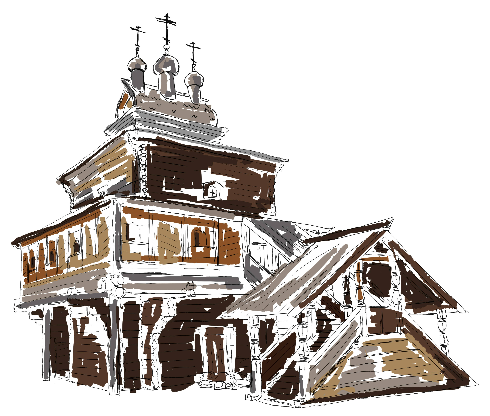

 ЦЕРКОВЬ ГЕОРГИЯ ПОБЕДОНОСЦА — ПАМЯТНИК ДЕРЕВЯННОГО ЗОДЧЕСТВА РУССКОГО СЕВЕРА В МОСКОВСКОМ МУЗЕЕ-ЗАПОВЕДНИКЕ «КОЛОМЕНСКОЕ». ПОСТРОЕНА В 1685 ГОДУ НА БЕРЕГУ РЕКИ ЁРГИ (СОВРЕМЕННАЯ АРХАНГЕЛЬСКАЯ ОБЛАСТЬ), СОХРАНИЛАСЬ В ПОЧТИ ОРИГИНАЛЬНОМ ОБЛИКЕ ДО НАЧАЛА XXI ВЕКА, В 2008—2011 РАЗОБРАНА, ПЕРЕВЕЗЕНА В МОСКВУ И ВОССТАНОВЛЕНА НА ТЕРРИТОРИИ КОЛОМЕНСКОГО.
ГЕОРГИЕВСКАЯ ЦЕРКОВЬ — ПАМЯТНИК ТРАДИЦИОННОГО ДЕРЕВЯННОГО ЗОДЧЕСТВА ПОДВИНЬЯ XVII—XVIII ВВ. ПРЕДСТАВЛЯЕТ СОБОЙ ДВУХЪЯРУСНОЕ СООРУЖЕНИЕ ИЗ СОСНОВЫХ БРЁВЕН. ОСНОВНАЯ ЧАСТЬ — ЧЕТЫРЁХУГОЛЬНЫЙ СРУБ-ЧЕТВЕРИК, С МИНИАТЮРНЫМИ ПРОРЕЗЯМИ ДЛЯ ОКОН И С АЛТАРНОЙ ПЯТИГРАННОЙ ПРИСТРОЙКОЙ С ВОСТОКА. ПОД КРЫШЕЙ ЧЕТВЕРИКА ВИДЕН ПОЯС С ДЕКОРОМ, ГДЕ ПЕРВОНАЧАЛЬНО НА ДРЕВНИХ ДОСКАХ БЫЛА НАЧЕРТАНА КРАСКОЙ ДАТА ОСВЯЩЕНИЯ ХРАМА (АПРЕЛЬ 1688 ГОДА). НА ОСНОВНОЙ ЧАСТИ УСТРОЕН ВЕРХНИЙ, ЗНАЧИТЕЛЬНО БОЛЕЕ УЗКИЙ ЧЕТВЕРИК С КРЫШЕЙ В ФОРМЕ БОЧКИ, УВЕНЧАННОЙ ТРЕМЯ СТОЯЩИМИ В РЯД ГЛАВКАМИ С КРЕСТАМИ. АЛТАРНАЯ ПРИСТРОЙКА ТАКЖЕ УВЕНЧАНА КРЫШЕЙ-БОЧКОЙ С ГЛАВКОЙ. У ЗАПАДНОГО ФАСАДА ИМЕЕТСЯ КРЫТОЕ КРЫЛЬЦО С ЛЕСТНИЦЕЙ, ВЕДУЩЕЙ НА ВЕРХНИЙ (НАД ПОДКЛЕТОМ) ЯРУС ЗДАНИЯ. ТАМ ЖЕ К ФАСАДУ ПРИСТРОЕНА ГАЛЕРЕЯ-ПАПЕРТЬ НА КОНСОЛЯХ, НЕКОГДА ОГИБАВШАЯ ВЕСЬ ФАСАД ПО ПЕРИМЕТРУ.
ПО ДОКУМЕНТАМ ВОЛОГОДСКОЙ ЕПАРХИИ ИЗВЕСТНО, ЧТО ГЕОРГИЕВСКАЯ ЦЕРКОВЬ БЫЛА ВОЗВЕДЕНА В 1685 ГОДУ НА СРЕДСТВА ПРИХОЖАН. КРОМЕ НЕЁ, В СЕМЁНОВСКОЙ ИМЕЛАСЬ ЕЩЁ И ДЕРЕВЯННАЯ РОЖДЕСТВЕНСКАЯ ЦЕРКОВЬ, ПОСТРОЕННАЯ В XVII В.; В ОТЛИЧИЕ ОТ ГЕОРГИЕВСКОЙ — ЗИМНЯЯ, ОТАПЛИВАЕМАЯ И С КОЛОКОЛЬНЕЙ. В 1720-Х ГОДАХ РОЖДЕСТВЕНСКАЯ ЦЕРКОВЬ СГОРЕЛА, ПОЗЖЕ БЫЛА ОТСТРОЕНА ЗАНОВО, А ГЕОРГИЕВСКАЯ УЦЕЛЕЛА В ПЕРВОНАЧАЛЬНОМ ВИДЕ. ГЕОРГИЕВСКАЯ ЦЕРКОВЬ В ЭТОМ ОБЛИКЕ СОХРАНЯЛАСЬ ВПЛОТЬ ДО НАЧАЛА XXI ВЕКА. В 1930-Х ГОДАХ СРЕДНЕПОГОСТСКИЕ ЦЕРКВИ БЫЛИ ЗАКРЫТЫ, ВНУТРЕННЕЕ УБРАНСТВО РАЗГРАБЛЕНО, ПОЗЖЕ В РОЖДЕСТВЕНСКОЙ БЫЛА УСТРОЕНА ШКОЛА, В ГЕОРГИЕВСКОЙ — КЛУБ, ЗАТЕМ СКЛАД. ВО ВТОРОЙ ПОЛОВИНЕ XX ВЕКА ДЕРЕВНИ БЫВШЕГО ПРИХОДА ПРАКТИЧЕСКИ ОПУСТЕЛИ. ОБЕ ЦЕРКВИ СТОЯЛИ ЗАБРОШЕННЫЕ И ОБВЕТШАЛИ.
С 2003 ГОДА СПЕЦИАЛИСТЫ МОСКОВСКОГО ОБЪЕДИНЁННОГО МУЗЕЯ-ЗАПОВЕДНИКА НАЧАЛИ РАЗРАБОТКУ ПРОЕКТА РЕСТАВРАЦИИ НАХОДИВШЕЙСЯ К ТОМУ ВРЕМЕНИ ПОД УГРОЗОЙ РАЗРУШЕНИЯ ГЕОРГИЕВСКОЙ ЦЕРКВИ. ИНИЦИИРОВАЛ ПРОЕКТ ХУДОЖНИК ИВАН ГЛАЗУНОВ, СЛУЧАЙНО ОБНАРУЖИВШИЙ НИКОМУ ДО ТОГО НЕ ИЗВЕСТНУЮ ЦЕРКОВЬ. В 2008 ХРАМ БЫЛ РАЗОБРАН И ПЕРЕВЕЗЁН В МОСКВУ, В 2009 НАЧАЛИСЬ РАБОТЫ ПО РЕСТАВРАЦИИ ХРАМА И ВОССТАНОВЛЕНИЮ ЕГО НА ТЕРРИТОРИИ ПАРКА КОЛОМЕНСКОЕ, БЛИЗ КОМПЛЕКСА МУЗЕЯ ДЕРЕВЯННОГО ЗОДЧЕСТВА, КОТОРЫЕ БЫЛИ ЗАВЕРШЕНЫ В 2011 ГОДУ